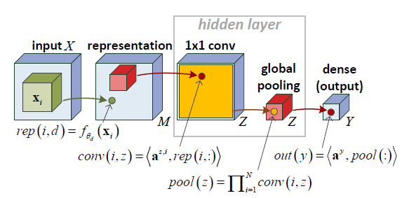
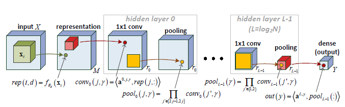
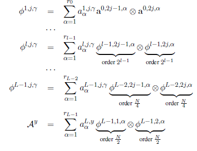

Complexity of neural networks
Posted: 2016-07-25 , Modified: 2016-07-25
Tags: neural net
Posted: 2016-07-25 , Modified: 2016-07-25
Tags: neural net
Papers:
A layer now looks like \[ h(x) = MEX_\xi [u_l^T \phi(x,z_l) + b_l]_{l=1,\ldots, n} \] where MEX is the exponential mean \[ \rc{\xi} \ln\pa{\rc n \sumo in \exp(\xi c_i)} \] and \(\phi\) is a kernel function, like \((x_iz_i)_i\) or \((-|x_i-z_i|^p)_i\). These give rise to linear and generalized Gaussian kernels when composed with MEX.
MEX interpolates between minimum, average, and maximum pooling.
There’s a natural unsupervised initialization scheme for SimNets based on statistical estimation. Assume the data is drawn from a mixture of generalized Gaussians and find max-likelihood parameters.
(cf. initialize the convolution kernels by looking at statistical properties of patches)
ICML16.
First, we show that convolutional rectifier networks are universal with max pooling but not with average pooling. Second, and more importantly, we show that depth efficiency is weaker with convolutional rectifier networks than it is with convolutional arithmetic circuits. This leads us to believe that developing effective methods for training convolutional arithmetic circuits, thereby fulfilling their expressive potential, may give rise to a deep learning architecture that is provably superior to convolutional rectifier networks but has so far been overlooked by practitioners.
Generalized tensor decompositions
\[(A\ot_gB)_{d_1,\ldots, d_{P+Q}} = g(A_{d_1,\ldots, d_P}, B_{d_{P+1},\ldots, d_{P+Q}}). \]
For arbitrary commutative/associative pooling function, replace \(\ot\) with \(\ot_g\).
COLT2016.

Consider a neural network defined on input \((x_1,\ldots, x_N)\in (\R^s)^N\), as follows.
\[\begin{align} rep(i,d) &= f_{\te_d}(x_i)\\ conv(i,z) &= \an{a^{z,i}, rep(i,:)} = \sum_d a_d^{z,i} f_{\te_d}(x_i)\\ pool(z) &= \prod_{i=1}^N conv(i,z) = \prod_{i=1}^N \sum_d a_d^{z,i} f_{\te_d}(x_i)\\ out(y) &= \an{a_y, pool(:)} = \sum_{z=1}^Z a_{y,z} \prod_{i=1}^N\sum_d a_d^{z,i} f_{\te_d}(x_i) \end{align}\]Note pool(z) is a 1-D tensor \[ (a_d^{z,i\ot N *})_{i_1,\ldots, i_N, d} \ot (f_{\te_d}(x_i))^{i\ot N}_{d,i_1,\ldots, i_N} \] so this is a rank \(Z\) tensor.
Think of conv as \(1\times 1\) convolution. Weight sharing makes the tensor decomposition symmetric.
Deep nets:

(Warning: The indexing of \(a\) has been switched around here.
We have a hierarchical decomposition. Ex. first layer:
\[\begin{align} conv_1(j,\ga) &= \an{a^{1,j,\ga}, pool_0(j,:)}\\ &=\an{a^{1,j,\ga}, \pa{\prod_{j'\in \{2j-1,2j\}} conv_0(j',k)}_k}\\ &=\an{a^{1,j,\ga}, (\conv_0(2j-1,k)\conv_0(2j,k))_k}\\ &=\sum_k a^{1,j,k} \conv_0(2j-1, k) \conv_0(2j,k). \end{align}\]Iterating this gives the hierarchical Tucker decomposition

Theorem 1: Consider the space of hierarchical tensors of order \(N\) and dimension \(M\) in each mode, parametrized by \(\{a^{l,j,\ga\}\). In this space, the tensor has CP-rank \(\ge r^{\fc N2}\) a.e.
Proof: Because the space of tensors with CP-rank forms an algebraic variety, it suffices to show that there exists a tensor of this rank. Do this by induction on layers and work with the matricization of the tensors (\(\ot\) corresponds to Kronecker product). The CP-rank equals the rank of the matricization.
Question: what about convolution with larger windows?
What is the motivation behind pooling? How much does it actually help?
Do you want universality?
Arithmetic circuits look much more like complexity-theoretic circuits! Training is harder. Product is AND, like soft version of min on \(\{0,1\}^n\)?
(Replacing sigmoids/relus by 0-1?)